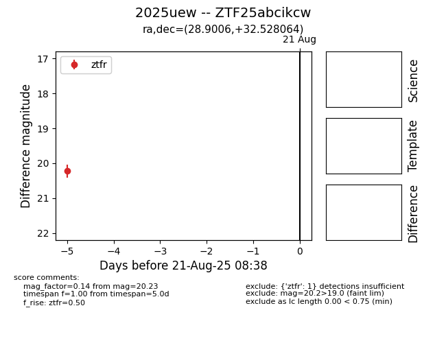

Target 2025uew at 2025-08-21 09:29, see:
FINK: fink-portal.org/ZTF25abcikcw
Lasair: lasair-ztf.lsst.ac.uk/objects/ZTF25abcikcw
ALeRCE: alerce.online/object/ZTF25abcikcw
TNS: wis-tns.org/object/2025uew
YSE: ziggy.ucolick.org/yse/transient_detail/2025uew
alt names
ZTF25abcikcw (ztf,alerce)
2025uew (tns,yse)
coordinates:
equatorial (ra, dec) = (28.9006,+32.52806)
galactic (l, b) = (138.2936,-28.42246)
photometry
last ztfr=20.23
1 ztfr detections
